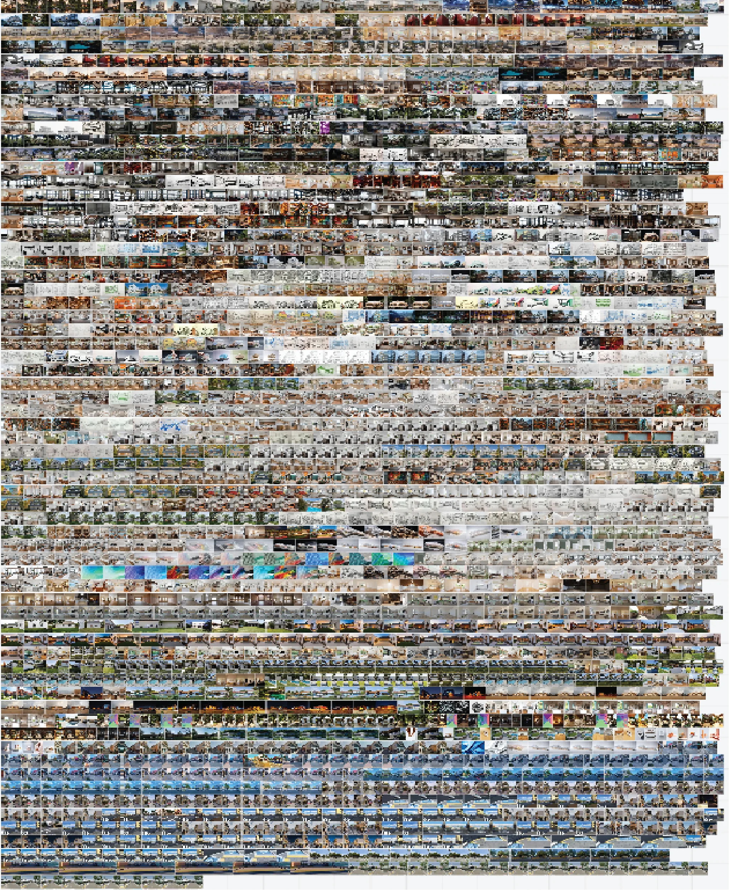

AI PERSONAL RESEARCH
Location// Armenia, Colombia
Type// Software, AI
Team// Diego Serna
This project documents my self directed exploration of AI as an architect. I began this research in late 2023, after gaining fluency in Grasshopper and stepping into more complex, system based design. Working from Colombia, where local communities and institutional support are limited, I relied on global forums, online resources, and constant self directed experimentation. In parallel with day to day work in conventional architecture offices, I tested workflows that could support basic professional tasks and extend my experiments.
I moved across platforms, starting with Automatic1111, then Forge UI, and eventually building a stable workflow in ComfyUI. I tested these across different design stages, but mainly in image post production and rendering, where they let me iterate looks, lighting, and materials quickly. The research spans text to image, image to image, and image 3D experimentation, prompt engineering, custom image generation with ControlNet, Flux models, LoRAs, and node based orchestration in ComfyUI. The result is a set of repeatable workflows that open new visual directions and help me prototype ideas faster while keeping design intent and constraints in the loop.
I ran a broad round of tests to refine generative workflows across several platforms. I worked mainly with Flux and trained my own LoRAs to steer style and detail, using text to image and image to image, plus inpainting and outpainting for targeted edits. I added quality boosts with modern upscalers and used ControlNet inputs like canny and depth when alignment to references was needed, with occasional trials of image to 3D.
Looking back over two years, it is striking to see how the results and workflows have evolved. Early on I ran ControlNet locally on my PC for about 30 minutes per image; today free online models can deliver comparable results faster and with far less friction for basic interiors and simple architectural tasks in img to img or text to image. Locally, generation times have dropped too: my current setups render in roughly 7 minutes with better models and higher quality. That said, web tools still offer limited control when geometry becomes complex. I still rely on ComfyUI and dedicated models, since online options rarely match the precision of strong upscalers or the mesh fidelity I can reach with tools like Hunyuan3D.